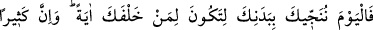
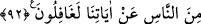

Denilir ki: Mükellefiyeti ve seçme hürriyeti varken “Fir’avn, îmândan yüz
çevirmiştir. Ama îmânı kabul edilmeyeceği zaman kabul edilsin diye o kadar mübalağa
etmiştir ki aynı mânâyı üç ayrı lafızla üç kere tekrarlamıştır. İlk olarak: “İnandım”,
ikinci olarak “İsrailoğulları’nın inandığından başka tanrı olmadığına”, son olarak
da: “Ben de müslümanlardanım.” demiştir. Oysa teklif ve ihtiyâr hakkı sürerken ilk
söylediği söz yeterli olacaktı. Ümitsizlik esnâsında edilen îmân ise reddedilip kabul
edilme bakımından muallaktadır. Şâyet îmân tam ölümün geldiği anda olursa reddedilir,
o anda olmazsa reddedilmez. Ölümün geliş ânı (ihtizâr), alınıp verilen son iki nefestir.
Es’iletül-hikem’de böyle denilmektedir.
İmam Mâlik’e göre o esnadaki îmân da makbûldür. İmam Mâlik bunu kabûl ederken,
tıpkı kılıç çekildiği sırada ya da had tatbik edilirken imân edenlerin îmânlarını makbûl
oluşuna kıyaslamıştır. Mâlikî mezhebinden olan Hz. Şeyh-i Ekber’in Fusûs’taki
Fir’avn’un îmânına kâil olup sonra meseleyi Allah’a havâle eden sözleri de bu görüşe
dayanmaktadır.
92. Senden sonra gelenlere ibret olman için bugün senin bedenini kurtaracağız.
Ama insanlardan çoğu, âyetlerimizden gâfildir.
“Senden sonra gelenlere ibret” ardından gelen İsrâiloğulları’na alâmet “olman
için…” Çünkü İsrâiloğulları Fir’avn’u gözlerinde o kadar büyütmüşlerdi ki onun
öleceğini tahayyül edemiyorlardı. Mûsâ (a.s.) onun boğulduğunu haber verince
Fir’avn’un cesedinin geçtikleri sahile tıpkı bir öküz gibi kıpkırmızı kısa boylu biri
olarak atıldığını gözleriyle görünceye dek Mûsâ (a.s.)’ı yalanlamışlardı.
Yâhut “Senden sonra gelen ümmetler, seni görenlerden sonunun nereye vardığını
işittiklerinde bu, onlar için bir işâret, ibret ve azgınlığın cezâsı olmak üzere” demektir.
Ya da “İnsan yücelik, büyüklük ve güç bakımından en üst seviyeye çıksa da başkasının
mülkiyetinde, güçsüz/âciz ve rab olmakla hiç alâkası olmadığını gösteren bir delil
olasın diye kurtardık.” mânâsında da olabilir.
Kendisini yok olma girdabında boğulmaktan kurtaramayan bir kul/köle neden “Ben
sizin en yüce rabbinizim.” (en-Nâziât, 79/24) nidâsını cihan halkının kulağına
ulaştırır?!
Bir âciz ki uyku ve yemeğin esiri
Kudretten dem vurur böyle hayırsız biri
O kimse ki kendi nefsinin zebunu olur
Nasıl güç ve kuvvet sâhibi olur?!